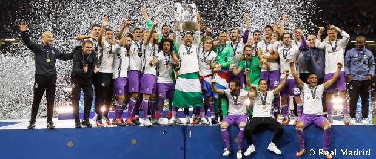
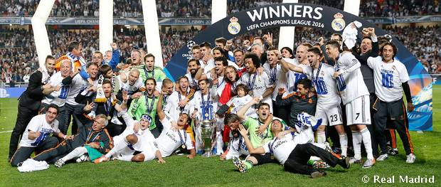

في هذه المرحلة، تربع ريال مدريد من جديد على عرش كرة القدم العالمية بفوزه بدوري أبطال أوروبا أربع مرات. في 2014، تُوّج الفريق بلقب دوري أبطال أوروبا الـ10 وبكأس العالم للأندية. صنع زين الدين زيدان التاريخ في موسميه الأول والثاني على رأس الفريق، حيث فاز بدوري أبطال أوروبا الـ11 والـ12. إلى جانب ذلك كان 2017 عامًا قياسيًا فاز فيه الفريق، للمرة الأولى في تاريخه، بخمسة ألقاب: دوري أبطال أوروبا، كأس العالم للأندية، الدوري الإسباني وكأسي السوبر الإسباني والأوروبي. جاء لقب دوري أبطال أوروبا الـ13 في 2018، عقب الفوز على ليفربول في كييف.
.png)
خطّ ريال مدريد من جديد في هذه المرحلة وتيرة كرة القدم العالمية، إذ رفع كأس دوري الأبطال العاشر في تاريخه في 24 مايو 2014، قبل فوزه في 20 ديسمبر، بكأس العالم للأندية. إلى جانب ذلك فقد فاز الفريق الأبيض بقيادة أنشيلوتي بكأس السوبر الأوروبي وكأس الملك. وقبل وصول المدرب الإيطالي كان الفريق قد أحرز ثلاثة ألقاب مع المدرب السابق مورينيو الذي غارد الفريق مع نهاية الموسم 2012-13.
حط كارلو أنشيلوتي رحاله في ريال مدريد في يونيو 2013. وفاز الفريق في عهد الإيطالي بأربعة ألقاب؛ كان الأول كأس الملك الإسباني التاسع عشر في تاريخ النادي على حساب برشلونة. وفي 24 مايو 2014 فاز الفريق الأبيض بدوري الأبطال، بعد انتصار مثير على أتلتيكو مدريد 4-1 في لشبونة، ليرفع الكأس الأوروبي العاشرة بفضل أهداف كل من راموس، بيل، مارسيلو وكريستيانو رونالدو.
تُوّج الفريق في الموسم الثاني لأنشيلوتي بكأسين آخرين: كأس السوبر الأوروبي ضد إشبيلية وكأس العالم للأندية الأول في تاريخ ريال مدريد ضد سان لورينزو، ليكلل البيض عام 2014 التاريخي بلقب جديد. في يونيو 2015، عاد رافا بينيتيز إلى النادي الذي نشأ فيه لقيادة الفريق الأول؛ وفي 2016، أضحى زيدان المدرب الأول للفريق بعد مسيرته الأسطورية كلاعب، واختتم الفرنسي باكورة مواسمه على رأس الفريق بالتتويج بكأس أبطال أوروبا الحادية عشرة ضد أتلتيكو مدريد في ميلانو.
جاء الموسم الثاني للمدرب الفرنسي حافلاً بالألقاب، حيث فاز المدريديستا بلقب دوري أبطال أوروبا الـ12، وأصبح أول فريق يفوز بالبطولة بنظامها الحديث مرتين على التوالي. إلى جانب البطولة القارية، فاز رجال زيدان أيضاً بلقب الدوري المحلي (الليغا) 2016-2017، كأس السوبر الأوروبي الثالثة وبطولة كأس العالم للأندية الثانية، التي أجريت في اليابان. استهل الأبيض الموسم 2017-2018 بالتتويج بكأس السوبر الأوروبي على حساب مانشستر يونايتد ثم فاز ببطولة كأس السوبر الإسباني العاشرة. يشكل عام 2018 جزءاً من الأسطورة المدريديستا بفضل الفوز بالكأس الثالثة عشر، ضد ليفربول في المباراة النهائية التي أقيمت في كييف، والتتويج أيضاً بلقب كأس العالم للأندية، على حساب فريق العين في الإمارات العربية المتحدة.

فاز الفريق بدوري أبطال أوروبا الثالث على التوالي في كييف على حساب ليفربول، بأهداف بيل (2) وبنزيمة

سجل رونالدو (2) وكاسيميرو وأسينسيو أهداف المباراة ضد يوفنتوس في النهائي التاريخي في كارديف.

سجّل كاسيميرو وإيسكو في الفوز على مانشستر يونايتد للتتويج بكأس السوبر الأوروبي للمرة الرابعة.
فاز ريال مدريد باللقب في الجولة الأخيرة التي أجريت في ملقا، وسجل الأبيض الأهداف في جميع جولات المسابقة.
الفوز على كاشيما انتليرز يعزز أسطورة ريال مدريد بلقبين بكأس العالم للأندية وثلاثة ألقاب بكأس الانتركونتيننتال.

حُسم نهائي الحادية عشر في ركلات الترجيح. سدد كريستيانو رونالدو الهدف الخامس ومنح الفوز لريال مدريد.
أدرك راموس التعادل في الدقيقة 93 من نهائي دوري أبطال أوروبا وأشعل الجنون المدريدي في كل أنحاء العالم.
تُوّج ريال مدريد بطلا للعالم بعد الفوز في المباراة النهائية على فريق سان لورينزو، بأهداف راموس وبيل.